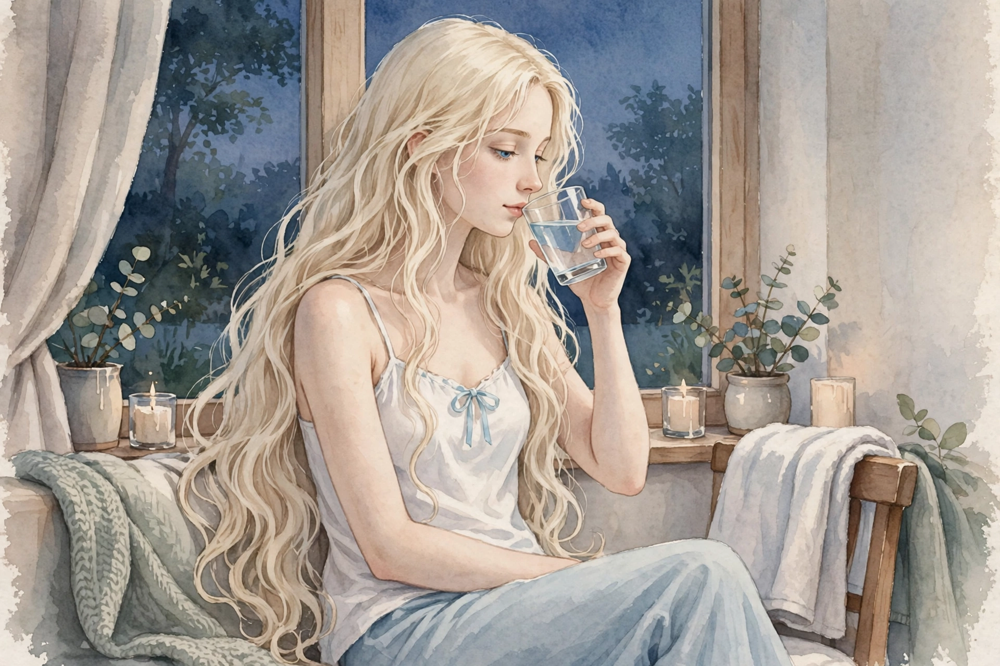

トップ ＞ ボディケア ＞ 日差しを浴びた日の夜のケアの段取り
日差しを浴びた日の夜のケアの段取り

日差しの強い日に外で過ごした夜は、いつものケアをそのまま続けてよいのか迷うことがあります。この記事では、効能の話ではなく、その夜の「段取り」と、手持ちのアイテムの「表示の確認」に絞って整理します。施術の現場でも、夏の夕方の予約では、この話題が出ることがあります。大切なのは、あわてて何かを足すことではなく、その夜の進め方を決めておくことです。
帰宅したら、まず肌の状態を見る
段取りの出発点は、肌の状態の確認です。赤みが強い、触るとヒリヒリする感じがある、といった状態のときは、普段のケアアイテムを重ねる日ではありません。そういう日は、ケアの品数を増やすのではなく、減らす方向で組み立てます。鏡の前で、顔だけでなく、首の後ろや肩、腕など、日差しに当たった範囲全体を見渡します。
まずは衣類を替え、汗を落として、肌を清潔にすることから始めます。入浴は、熱いお湯に長くつかるより、ぬるめのお湯で短めに済ませる方が、その夜の肌への負担感が少ないと感じます。体を洗うときも、こすらず、泡でなでるように洗います。タオルで拭くときも、押さえるように水分を取るのが、その夜の扱い方です。衣類は、肌当たりのやわらかい、締め付けの少ないものを選びます。
使うアイテムは、表示を読み直してから
日差しを浴びた日の夜は、手持ちのアイテムの表示を読み直す良い機会です。「日焼けした肌には使わないでください」「肌に異常があるときは使用しないでください」といった注意書きが書かれているアイテムは、その夜は使わない判断をします。表示は、そのための材料として用意されています。
香りの強いアイテムや、スクラブのように粒のある洗浄料も、その夜は避けるのが無駄のない選択です。使う品数を絞り、肌に触れる回数そのものを減らすことが、その夜の段取りの基本になります。迷ったら、「今日は何も足さない」という選択肢を持っておくことです。水分補給をして、早めに休むことも、その夜の過ごし方の一部です。
翌日以降の進め方
翌日も赤みやヒリつく感じが続く場合は、ケアを足すのではなく、状態が落ち着くまで様子を見ます。普段のケアに戻すのは、肌の状態がいつも通りに戻ってから、少しずつです。戻すときも、品数を一度に全部戻すのではなく、ひとつずつ様子を見ながら進めます。日差しの強い日が続く時期は、外出時の塗り直しの段取りも、あわせて見直す機会になります。
段取りを先に決めておくと、「何か塗らなければ」と焦らずに済みます。浴びた日の夜は、休ませることもケアのうちです。
この記事は、一般的な段取りの紹介です。強い赤みや痛み、水ぶくれ、発熱などがある場合は、医療機関にご相談ください。日焼けは、やけどの一種として扱われることもあります。
その夜の過ごし方にも、段取りがあります。汗をかくような運動や、熱いお湯の長風呂は、その夜は避けるのが無難です。食事や水分補給を済ませ、早めに休むことも、体の回復の時間を作る過ごし方です。寝具や衣類は、肌への摩擦が少ない、やわらかい素材のものを選ぶと、夜の間も肌に触れる負担が減ります。
翌朝の段取りも、あわせて決めておきます。朝の洗顔や入浴でも、こすらない洗い方を続けること。日差しに当たる予定がある日は、無理のない範囲で計画を調整することも選択肢です。浴びた日の夜に段取りを決めておくと、翌朝に迷いません。
家族で出かけた日は、子どもの肌の状態も同じように確認します。子どもの場合は、状態の判断を自己流で進めず、気になる様子があれば医療機関に相談する、という線引きを先に決めておきます。

セラフィナ「浴びた日の夜は、足すより休ませる。段取りを決めておくと焦らないね」